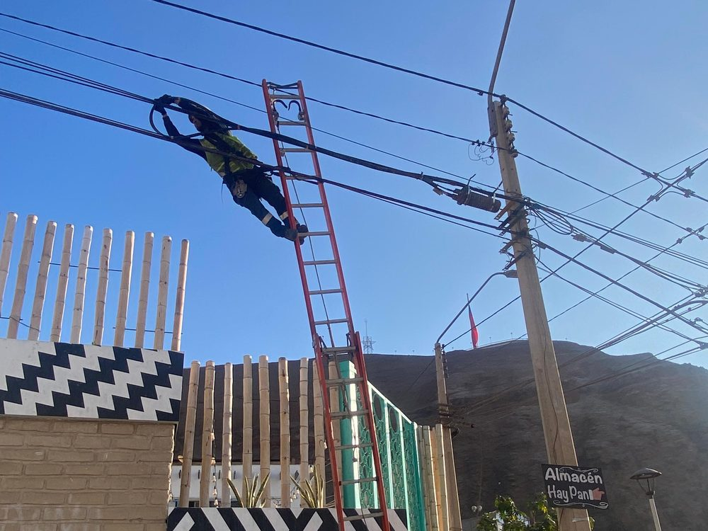

Fibra óptica · Obra civil · Certificación OTDR
La cuadrilla que construye es la que certifica.
Somos la contratista que ejecuta en terreno. Trabajamos para operadores y para contratistas principales que necesitan cuadrillas propias, no subcontratos encadenados.
Hacemos también la obra civil que esas redes necesitan: excavación, ductos, cámaras y reposición de hormigón, asfalto y baldosa. El mandante no coordina dos contratistas para el mismo tramo.

01 — Referencias
Dos redes distintas, cuatro mandantes, dos años seguidos.
557 proyectos en Región Metropolitana y Valparaíso. Somos su subcontratista de mayor volumen.
323 proyectos. Construcción, certificación y as-built bajo estándar OnNet.
Cuatro cuadrillas fijas en Arica y Antofagasta: producción por zona, verticales, reparaciones y auditorías.
Mandante nuevo. Proyectos de despliegue, AF y SIF.
ATP Fiber responde las dos preguntas que hace todo mandante nuevo. La primera es si sabemos entrar a una red que no hemos trabajado antes: llegamos a la de Movistar sin conocerla y sostuvimos producción nueve meses seguidos. La segunda es si sabemos operar lejos de la base: movilizamos cuadrillas completas al norte, con los vuelos, la estadía y los relevos programados por nosotros.
Podemos entregar contactos de supervisión y coordinación.
02 — Registro de obra
Lo que se ve en terreno.
Fotografías de proyectos ejecutados en Arica, Concón, Quillota, Santiago, Providencia y San Miguel.





03 — Servicios
Del diseño hasta la carpeta de entrega.
Ingeniería de proyecto
Reconocimiento de ruta, trazado y planos para construir.
Redes AF y SIF
Tendido aéreo y subterráneo, herrajes, cámaras y postación.
Línea para fibra óptica
Troncal, correteo, mufas con sus splitters adentro, y cajas terminales.
Empalme y medición OTDR
Fusionadora Sumitomo T-56 y OTDR Viavi propios en cada cuadrilla.
As-built y carpeta de entrega
Plano del ejecutado, trazas, registro fotográfico y checklist.
Excavación y reposición
Ductos, cámaras, ruptura y reposición de hormigón, asfalto y baldosa.
04 — Capacidad operativa
Equipamiento propio en cada cuadrilla.
No arrendamos equipos críticos ni dependemos de terceros para medir. Cada cuadrilla sale a terreno autónoma, con su vehículo, sus instrumentos y sus elementos de protección.
Somos 23 personas en siete cuadrillas, con base en Huechuraba: seis de fusión y una de línea. Entre doce y treinta proyectos por mes, según el tamaño.
- Fusionadora Sumitomo T-56, una por cuadrilla
- OTDR Viavi, para certificar en el mismo turno
- Camioneta, escalas con gancho y cuerdas anticaídas
- Arnés dieléctrico y ropa ignífuga para todo el personal
- Cuadrillas contratadas directamente por MCF, con cotizaciones al día
05 — Cobertura
Base en Santiago, experiencia de Arica a Osorno.
Al norte no fuimos de paso. Entre diciembre de 2024 y agosto de 2025 mantuvimos cuadrillas fijas en Arica y Antofagasta para ATP Fiber Chile, con los vuelos, la estadía y los relevos programados por nosotros. Mover una cuadrilla completa fuera de Santiago ya lo tenemos resuelto: procedimiento hecho y costos medidos.
06 — Calidad y cumplimiento
Una revisión propia antes de que la haga el cliente.
Tenemos una jefa de calidad dedicada, que no depende de las cuadrillas y cuyo único trabajo es que el proyecto llegue completo y correcto a revisión del mandante.
Cuando aparece una observación de terreno la repara la misma cuadrilla que ejecutó, y el retrabajo lo paga MCF: combustible, peajes y horas incluidos.
Ya pasamos una homologación completa como proveedor. La carpeta está armada y la entregamos apenas la pidan.
- Checklist de certificación revisado por ID antes de presentar
- Trazas y PDF de OTDR verificados uno a uno
- Plano as-built contrastado contra lo ejecutado en terreno
- Procedimientos documentados por actividad y disponibles en faena
- Asesor en prevención de riesgos externo, con visitas a faena
- Software propio que lee el DWG y arma la planilla de entrega
07 — Equipo
Quién responde por cada cosa.
Relación con mandantes, planificación y control de proyectos.
Terreno, as-built y flota.
Representación y administración societaria.
Checklist, fotografías y certificaciones antes de presentar.
Avance diario, coordinación de cuadrillas y permisos.
Visitas a faena, capacitación y documentación.
08 — Contacto
Partimos con lo que podemos sostener.
No ofrecemos capacidad que todavía no tenemos. Abrimos acotado con dos o tres cuadrillas híbridas, mostramos el estándar en obra, y escalamos hasta siete sin pasarle el trabajo a terceros.
Huechuraba, Santiago